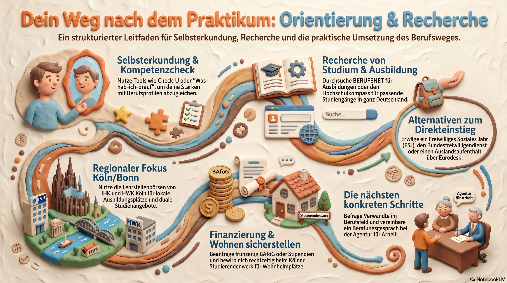

Hier findest du eine umfassende Linksammlung für deine berufliche Orientierung nach dem Praktikum.
Nutze die aufgelisteten Portale und Tools zur Information und dokumentiere deine Erkenntnisse direkt hier auf der Seite. Am Ende kannst du deine Antworten kompakt exportieren.

Bevor man sucht, muss man wissen, wer man ist. Diese Tools helfen dabei, Interessen und Stärken mit Anforderungen abzugleichen.
Diese Portale sind essenziell, um die gesamte Bandbreite an Möglichkeiten zu sehen.
Für diejenigen, die noch nicht sofort ein Studium oder eine Ausbildung beginnen möchten.
Hier findest du Angebote in der Umgebung.